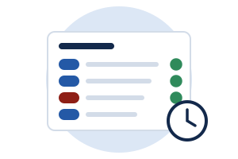

logbook และการนับชั่วโมง
ชั่วโมงฝึกของทั้งสองวิชามาจาก logbook ที่ผู้นิเทศงานรับรองแล้วเท่านั้น หน้านี้อธิบายวิธีบันทึก การแท็กวิชา และกติกาการนับ

วงรอบรายสัปดาห์
บันทึกทุกวันที่ทำงาน จันทร์–เสาร์/อาทิตย์ (วิชาละ 1 รายการต่อวัน)
เมื่อเลือกวันที่และแท็กวิชา (305 หรือ 304) ระบบจะดึงเวลาเริ่ม เวลาเลิก และเวลาพัก (นาที) จากตารางเวลาในข้อตกลง SE-WIL01 มาใส่ให้อัตโนมัติ (ปรับแก้เวลาตามจริงได้หากวันนั้นทำต่างจากเวลาปกติ และสามารถบันทึกวันเสาร์หรือวันอาทิตย์ได้ตามที่ปฏิบัติงานจริง) เขียนรายละเอียดอย่างน้อย 30 ตัวอักษรว่าทำอะไร ได้ผลอะไร ใช้เครื่องมืออะไร แนบลิงก์ รูป ปัญหา และสิ่งที่ได้เรียนรู้ได้ (ไม่บังคับ) วันที่ไม่ได้ไปทำงานให้เลือกประเภท "ไม่ได้ปฏิบัติงาน" และระบุเหตุผล
ตรวจรายการของสัปดาห์ให้ครบภายในวันอาทิตย์
รายการที่เพิ่งบันทึกจะมีสถานะเป็น ร่าง แก้ไขหรือลบได้ตลอดเวลา ระบบกำหนดให้บันทึกงานได้วิชาละไม่เกิน 1 รายการต่อวันเพื่อให้ตารางสะอาดและตรวจสอบง่าย (หากวันเดียวกันทำทั้ง 2 วิชา ให้บันทึกแยกวิชาละ 1 รายการโดยเวลาห้ามซ้อนทับกัน)
ระบบรวบรายการรายสัปดาห์ส่งให้ผู้นิเทศงานทุกเช้าวันจันทร์ 08:00 น. (หรือกดส่งเองได้วันละครั้ง)
ทุกเช้าวันจันทร์ เวลา 08:00 น. ระบบจะตัดยอดรายการร่างของสัปดาห์ที่ผ่านมา (ถึงวันอาทิตย์) แยกชุดตามสัปดาห์ส่งให้ผู้นิเทศงานรับรองทางอีเมลอัตโนมัติ หรือคุณสามารถกดปุ่ม "ส่งให้ผู้นิเทศงานรับรองตอนนี้" ได้วันละครั้ง โดยระบบจะแสดงกล่องสรุปจำนวนรายการและชั่วโมงแยกตามวิชา 305 / 304 ให้ตรวจสอบก่อนกดยืนยันส่ง
การดึงกลับมาแก้ไข และการรับรองจากผู้นิเทศงาน
หากส่งไปแล้วแต่ผู้นิเทศงานยังไม่ได้กดรับรอง (สถานะ รอรับรอง) คุณสามารถกดปุ่ม "ดึงกลับมาแก้ไข" เพื่อให้รายการกลับเป็นร่างและแก้ไขเวลา/วิชา/รายละเอียดได้ทันที ส่วนรายการที่ผู้นิเทศงานกด ส่งกลับ จะมีเหตุผลแนบมาให้แก้ไขแล้วส่งใหม่ในรอบถัดไป
ชั่วโมงที่รับรองแล้วเข้ายอดสะสมของแต่ละวิชา
ดูยอดสะสมของ ENGSE305 และ ENGSE304 และกดแถบดัชนีสัปดาห์ (สัปดาห์ที่ 1–16) เพื่อข้ามไปดูรายการของแต่ละสัปดาห์ได้ทันทีในระบบ SE-WIL
ฟีเจอร์ช่วยบันทึกและวิธีแก้ไขเมื่อกรอกผิด
- ดึงเวลาตามตารางข้อตกลงอัตโนมัติ: เมื่อสลับเลือกวิชา 305 หรือ 304 ระบบจะตั้งเวลาเริ่ม–เลิกและเวลาพักตามตารางเวลาที่คุณระบุไว้ในข้อตกลง SE-WIL01 ให้ทันที (มีปุ่ม "ใช้เวลาตามตารางข้อตกลง" สำหรับกดรีเซ็ตกลับเป็นเวลามาตรฐานได้ทุกเมื่อ)
- สลับวิชาให้อัตโนมัติเมื่อบันทึกเพิ่มในวันเดียวกัน: หากวันนี้คุณบันทึกวิชา 305 ไปแล้ว เมื่อกดเพิ่มรายการใหม่ในวันเดียวกัน ระบบจะสลับไปเลือกวิชา 304 พร้อมดึงเวลาของ 304 ให้อัตโนมัติ
- ป้องกันการลงวิชาเดิมซ้ำในวันเดียวกัน: ใน 1 วันบันทึกงานได้วิชาละ 1 รายการเท่านั้น (รวมเวลาพักไว้ในรายการเดียว) หากเผลอเลือกวันที่และวิชาที่มีข้อมูลอยู่แล้ว ระบบจะแจ้งเตือนและแสดงปุ่ม "ดึงรายการวิชา 305/304 ของวันนี้ขึ้นมาแก้ไข" ให้กดเปิดแก้ไขรายการเดิมได้ทันที
- วิธีแก้ไขตามสถานะของรายการ:
- สถานะ ร่าง (draft) หรือ ส่งกลับ (returned): กดปุ่ม "แก้ไข" หรือ "ลบ" ที่ท้ายแถวในตารางได้เลย
- สถานะ รอรับรอง (pending): กดปุ่ม "ดึงกลับมาแก้ไข" ที่ท้ายแถว รายการจะเปลี่ยนกลับเป็นสถานะร่างและเปิดขึ้นมาให้แก้ไขทันที
- สถานะ รับรองแล้ว (certified): ระบบจะล็อกไม่ให้แก้ไขหรือลบเองเพื่อรักษาความถูกต้องของชั่วโมงสะสม หากพบว่ากรอกผิดวิชาหรือใส่วันเวลาผิดหลังรับรองไปแล้ว ให้แจ้ง อาจารย์นิเทศ หรือ ผู้ประสานงาน SE-WIL เพื่อกดปลดล็อกส่งกลับให้แก้ไข
- ต้องการเปลี่ยนตารางเวลามาตรฐาน (305 / 304): หากบริษัทปรับเปลี่ยนวันหรือเวลาทำงานประจำจากที่ระบุไว้ในข้อตกลงตอนแรก ให้แจ้ง ผู้ประสานงาน SE-WIL (ผู้ดูแลระบบ) เพื่อปรับตารางเวลาในระบบ เวลาเริ่มต้นในหน้า Logbook จะเปลี่ยนตามตารางใหม่ทันที
logbook ใช้ประเมินอะไร
logbook เป็นคะแนนตรงของ ENGSE305 หัวข้อ "logbook และงานรายสัปดาห์" 15% และเป็นหลักฐานที่ผู้ประเมินใช้ในส่วนอื่น
| ส่วนของคะแนน | น้ำหนัก | ใช้อะไรจาก logbook |
|---|---|---|
| 305 สมรรถนะกลางภาคและปลายภาค (ผู้นิเทศงาน) | 10 + 30 | งานที่ทำจริงตลอดภาค ความสม่ำเสมอ |
| 305 การนิเทศและประชุมสามฝ่าย | 20 | อาจารย์อ่าน logbook ก่อนไปนิเทศ |
| 305 รายงานสะท้อนการเรียนรู้ | 15 | ปัญหา วิธีแก้ และสิ่งที่ได้เรียนรู้ที่บันทึกไว้ |
| 305 นำเสนอแฟ้มผลงาน | 10 | ลิงก์และรูปหลักฐาน |
| 304 ทบทวนความก้าวหน้า | 15 | รายการแท็ก 304 ระหว่างภาค |
| 304 สิ่งประดิษฐ์ทาง SE | 25 | ลิงก์ผลงาน เช่น เอกสาร โค้ด ผลการทดสอบ |
เกณฑ์ logbook 15 คะแนน (SE-WIL04)
| ด้าน | คะแนน | อาจารย์ดูอะไร |
|---|---|---|
| สม่ำเสมอและส่งรับรองตรงเวลา | 5 | บันทึกทุกวันทำงาน ไม่ทิ้งค้างเกิน 1 สัปดาห์ วันที่ไม่ได้ไปทำงานบันทึกเหตุไว้ |
| รายละเอียดชัดเจนและมีหลักฐาน | 5 | บอกว่าทำอะไร ได้ผลอะไร ใช้เครื่องมืออะไร แนบลิงก์หรือรูปเมื่อมี |
| แท็กถูกต้องและสอดคล้องกับแผนงาน | 2 | 305 หรือ 304 ตรงกับลักษณะงาน และสอดคล้องกับแผน 15 สัปดาห์ (SE-WIL03) |
| สะท้อนปัญหาและการเรียนรู้ | 3 | บันทึกปัญหา วิธีแก้ และสิ่งที่ได้เรียนรู้อย่างสม่ำเสมอ |
จังหวะ: บันทึกทุกวันทำงาน (จ.–ส./อา.) → ตรวจให้ครบภายในวันอาทิตย์ → เช้าวันจันทร์ 08:00 น. ระบบส่งให้ผู้นิเทศงานรับรอง → สัปดาห์ 5–7 อาจารย์ใช้ logbook เตรียมนิเทศ → สัปดาห์ 8 ประเมินกลางภาค → สัปดาห์ 14 ประเมินปลายภาคและรายงานสะท้อน
เป้าหมายชั่วโมง
| รายวิชา | ต่อสัปดาห์ | ภายในสัปดาห์ที่ 10 | ทั้งภาค |
|---|---|---|---|
| ENGSE305 | อย่างน้อย 20 ชั่วโมง | ประมาณ 200 ชั่วโมง | อย่างน้อย 300 ชั่วโมง |
| ENGSE304 | 6 ชั่วโมงที่สถานประกอบการ และ 3 ชั่วโมงศึกษาด้วยตนเอง | ประมาณ 90 ชั่วโมง | อย่างน้อย 135 ชั่วโมง |
ตารางเรียนที่งานทะเบียนใช้คือ ENGSE305 วันจันทร์ถึงศุกร์ 08:00–12:00 น. และ ENGSE304 วันพฤหัสบดีและศุกร์ 14:00–17:00 น. ส่วนเวลาทำงานจริงเป็นไปตามที่ตกลงกับสถานประกอบการในข้อตกลง SE-WIL01
แท็ก 305 หรือ 304 อย่างไร
305 งานตามตำแหน่ง
- งานที่หัวหน้าหรือผู้นิเทศงานมอบหมายตามตำแหน่ง
- ประชุมทีม งานประจำ งานสนับสนุนทีม
- การอบรมภายในที่บริษัทจัด
- หรืองานอื่นนอกขอบเขตโครงงาน
304 งานโครงงาน
- เก็บและวิเคราะห์ความต้องการ ออกแบบ เขียนโค้ด ทดสอบ
- ประชุมกับที่ปรึกษาหรือที่ปรึกษาร่วมเรื่องโครงงาน
- ศึกษาด้วยตนเองและเขียนรายงานโครงงาน
- หรืองานอื่นในขอบเขตข้อเสนอโครงงาน รวมการเตรียมข้อเสนอ
งานประจำที่จะใช้เป็นโครงงาน แท็กเป็น 305 จนกว่าข้อเสนอโครงงานที่ระบุงานนั้นจะได้รับอนุมัติ หลังวันอนุมัติจึงแท็กเป็น 304 ได้ ชั่วโมงเดียวกันนับได้วิชาเดียวเสมอ
ตัวอย่างการบันทึก
| วันที่ | เวลา | แท็ก | สิ่งที่ทำและผลที่ได้ |
|---|---|---|---|
| จ. 7 ธ.ค. 69 | 08:30–17:30 (พัก 60 น.) | 305 | แก้ข้อบกพร่องหน้ารายงานยอดขาย 2 รายการ และเขียนชุดทดสอบหน่วยของโมดูลคำนวณส่วนลด ผ่านการรีวิวโค้ดจากพี่เลี้ยง |
| พฤ. 10 ธ.ค. 69 | 08:00–12:00 | 305 | ปรับปรุง API ค้นหารายการใบสั่งซื้อและทดสอบร่วมกับทีม Frontend บนเซิร์ฟเวอร์ทดสอบ |
| พฤ. 10 ธ.ค. 69 | 14:00–17:00 | 304 | สัมภาษณ์ผู้ใช้ฝ่ายคลังสินค้า 2 คน ได้ความต้องการ 9 ข้อ บันทึกใน SRS ฉบับร่าง |
| ส. 12 ธ.ค. 69 | 09:00–12:00 | 304 | ศึกษาด้วยตนเอง: อ่านเอกสาร API ของระบบเดิม และร่างแผนภาพลำดับการทำงาน |
รายละเอียดเพิ่ม (ไม่บังคับ)
กด "รายละเอียดเพิ่ม" ใต้ช่องรายละเอียดงาน ใส่เฉพาะเมื่อมี ทั้งหมดช่วยให้ได้คะแนนด้าน "หลักฐาน" และ "การสะท้อน" และใช้เขียนรายงานสะท้อนการเรียนรู้กับแฟ้มผลงานตอนปลายภาค
- ลิงก์ผลงานหรือหลักฐาน ไม่เกิน 3 ลิงก์ เช่น merge request เอกสาร ตั๋วงาน ลิงก์ภายในบริษัทใส่ได้ ผู้นิเทศงานเปิดดูได้
- ปัญหาและอุปสรรค วิธีแก้ และ สิ่งที่ได้เรียนรู้ ช่องละไม่เกิน 500 ตัวอักษร
- รูปหลักฐาน 1 รูปต่อรายการ เช่น หน้าจอผลงาน แผนภาพบนกระดาน ระบบย่อรูปให้ ห้ามมีหน้าคน ข้อมูลลูกค้า หรือข้อมูลลับของบริษัท ถ้าไม่แน่ใจให้ถามผู้นิเทศงานก่อน อาจารย์นิเทศ ผู้ประสานงาน และผู้นิเทศงานเปิดดูได้ ระบบลบรูปหลังส่งผลการเรียน
กติกาการนับชั่วโมง
- ชั่วโมงนับเมื่อผู้นิเทศงานรับรองแล้วเท่านั้น
- บันทึกงานได้วิชาละ 1 รายการต่อวัน (สูงสุดไม่เกิน 2 รายการทำงานต่อวัน คือ 305 และ 304 อย่างละ 1 รายการ) รวมกันไม่เกิน 12 ชั่วโมงต่อวัน ช่วงเวลาของทั้งสองวิชาห้ามซ้อนทับกัน และบันทึกล่วงหน้าไม่ได้
- ชั่วโมงเกินขั้นต่ำรับได้ แต่ต้องไม่กินเวลาทำโครงงาน
- ช่วงกิจกรรมของมหาวิทยาลัยบ่ายวันพุธไม่นับเป็นชั่วโมงฝึก
การลาและการทำงานทางไกล
- การลาต้องได้รับอนุมัติจากทั้งผู้นิเทศงานและอาจารย์ วันลาไม่นับเป็นชั่วโมงฝึก ต้องชดเชยให้ครบภายในภาค ห้ามหยุดงานเองโดยไม่แจ้ง
- วันที่ไม่ได้ปฏิบัติงานให้บันทึกใน logbook โดยเลือกประเภท "ไม่ได้ปฏิบัติงาน" แล้วเลือกเหตุ: ป่วย ลากิจ บริษัทหยุดหรือวันหยุด หรืออื่นๆ (ระบุ) กรณีป่วยไม่ต้องระบุอาการหรือโรค รายการนี้ไม่นับชั่วโมง ระบบส่งให้ผู้นิเทศงานรับทราบพร้อมชุดรับรองรายสัปดาห์ทุกเช้าวันจันทร์ และอาจารย์นิเทศเห็นในระบบ ถ้าไม่ได้ไปทำงานครึ่งวัน ให้บันทึกงานส่วนที่ทำตามปกติด้วย
- วันทำงานทางไกลนับได้เมื่อผู้นิเทศงานรับรอง logbook ของสัปดาห์นั้น และรูปแบบการทำงานต้องระบุไว้ในข้อตกลง SE-WIL01
- ถ้าชั่วโมงขาดเพราะการลาที่ได้รับอนุมัติและชดเชยไม่ทันภายในภาค จะได้ระดับคะแนน I
เมื่อรายการถูกส่งกลับ หรือต้องการแก้ไขรายการที่ส่งไปแล้ว
หากรายการอยู่ในสถานะ รอรับรอง กดปุ่ม "ดึงกลับมาแก้ไข" ในตารางได้เองทันที หากรายการมีสถานะ ส่งกลับ ให้อ่านเหตุผล กดแก้ไขแล้วบันทึก รายการจะกลับเป็นร่างและถูกส่งให้รับรองในรอบถัดไป ส่วนรายการที่ รับรองแล้ว หากพบข้อผิดพลาดภายหลัง ให้แจ้งอาจารย์นิเทศหรือผู้ประสานงานเพื่อปลดล็อกให้แก้ไข